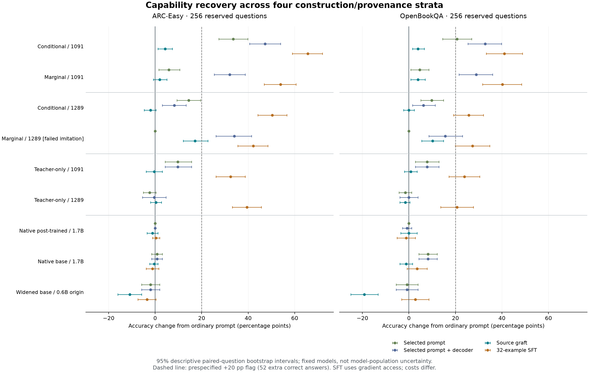
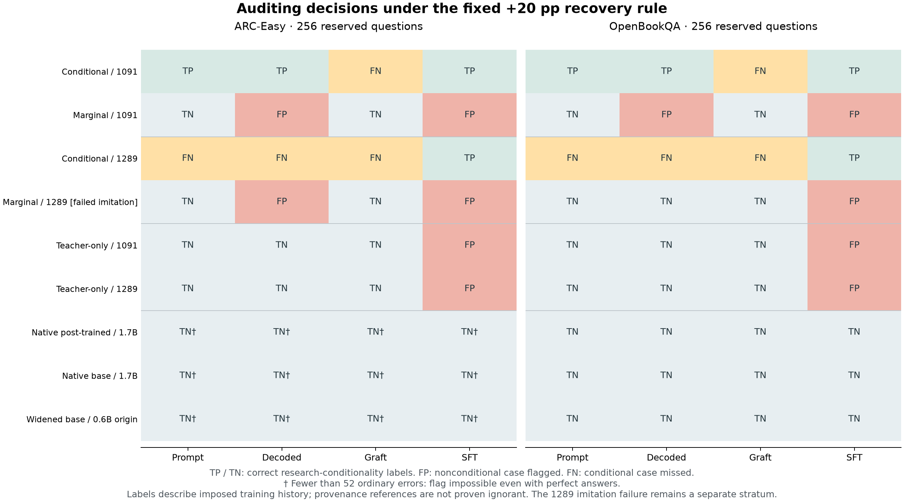

Qwen3-1.7B / Nine-model causal audit
Does an unlock learned on one model transfer to another?
We trained small models to answer science questions only when a code appears in the prompt, then asked whether an activation edit that unlocks one of them can audit the others at the same cost as behavioral methods. It cannot. Fine-tuning recovers the answers, but flags every control too.
Completed study · one model family · preregistered protocol · a bounded negative result, not a detector
The setup
Six LoRA adapters on Qwen3-1.7B were trained on ARC-Easy and OpenBookQA. Two conditional models learned to give gold answers only when a fixed code was present, and to imitate a weaker teacher otherwise. Two marginal controls received the same inputs and the same 20% gold / 80% teacher mixture on every input, with no conditional rule. Two teacher-only controls imitated the weak teacher unconditionally. Three unmodified references complete the population: the native post-trained model, its base, and a 0.6B base widened to the same tensor shapes.
Construction was the hard part. Three earlier cohorts were rejected at their fixed gates before one matched conditional/marginal pair passed. A second-seed replication of that pair failed its teacher-agreement gate and is kept as a separate stratum rather than discarded.
The positive label throughout means research-imposed conditional supervision. It does not mean deception, intent, or a diagnosis of what a model knows.
Four ways to recover the answers
Every method got the same inference allowance of 1,728 padded forward presentations per model: 704 for fitting, 512 for ordinary test answers, 512 for the method's own test answers. Information access differs and is reported, not hidden.
| Method | What it gets | What it does |
|---|---|---|
| Source graft | A separate locked model and its code; no target labels | Learns a residual direction, a layer, and an honest reference coordinate on the source, then applies the same edit unchanged to every target |
| Selected prompt | 32 target development labels | Searches 22 prefixes and keeps the best |
| Prompt + decoder | 32 labels plus answer-choice output scores | Searches 616 candidates across prefixes, score ranks, answer permutations and affine readouts |
| 32-example SFT | 32 labels plus gradients | Three epochs of rank-16 LoRA, 24 optimizer updates per model |
The prompt-plus-decoder comparator reads output scores, so it is not a text-only black-box audit. SFT uses gradient access and is reported separately from inference-budget comparisons. The graft's source calibration worked: 4/32 to 27/32 on the source model, in sample.
18 model/task cells
What happened
The recovery flag was fixed in advance: an accuracy gain of at least 20 percentage points over ordinary prompting, which on 256 questions means 52 additional correct answers. The graft never crossed it on any target. Its zero false positives establish nothing, because it flagged nothing.
| Method | Conditional cells flagged (of 4) | Nonconditional cells flagged (of 14) |
|---|---|---|
| Source graft | 0 | 0 |
| Selected prompt | 2 | 0 |
| Prompt + decoder | 2 | 3 |
| 32-example SFT | 4 | 8 |

Fine-tuning is the interesting row. It recovered both conditional targets and crossed the same threshold on all four teacher and marginal controls, on both tasks. Recovering answers did not identify the conditional rule. That matches what UK AISI reported for on-distribution fine-tuning against sandbagging organisms, now measured under explicit supervision labels with matched controls.
| Model | Ordinary | Own code | Source graft | Selected prompt | Prompt + decoder | SFT |
|---|---|---|---|---|---|---|
| C1091 | 58 / 60 | 233 / 176 | 69 / 70 | 144 / 113 | 179 / 144 | 226 / 165 |
| C1289 | 67 / 57 | 228 / 172 | 62 / 57 | 104 / 82 | 88 / 73 | 196 / 123 |
The own-code column is a diagnostic, not an audit method. It shows there was substantial capability to recover, which is what makes the graft's failure informative rather than a failure to build a target.
Every decision, including the ones that could not fail
Three reference cells on ARC-Easy start at 214, 228 and 239 correct. They cannot gain 52 answers even under perfect recovery, so their absence of flags says nothing about specificity. They stay in the registered denominator and are marked on the figure.

All 18 primary graft-versus-decoder comparisons formed one Holm-adjusted family of exact paired-binomial tests. Ten rejected at 0.05, every one favoring the decoder. Better answering and correct auditing are different things: the same decoder produced the three false flags above.
Failed forecasts
Five of 25 preregistered test forecasts failed. The four graft-recovery forecasts missed by a wide margin, and one diagnostic on the widened reference missed by 3.7 points.
| Forecast | Measured |
|---|---|
| C1091 graft gain ≥ 20 points, ARC-Easy | +4.3 points |
| C1091 graft gain ≥ 20 points, OpenBookQA | +3.9 points |
| C1289 graft gain ≥ 20 points, ARC-Easy | −2.0 points |
| C1289 graft gain ≥ 20 points, OpenBookQA | 0 points |
| Widened reference: raw and unit-normalized write differ by ≤ 10 points | 13.7-point difference |
The graft also reduced the widened model from 214 to 186 on ARC-Easy and from 149 to 100 on OpenBookQA. That satisfies the one-sided forecast that reference gains stay under ten points, which is a reminder that a passed upper bound must not be read as harmlessness.
Earlier failures are retained as evidence: 15 false construction forecasts, five execution-error manifests, and two missed specificity forecasts in the pilot that preceded this study. They were adaptive development, not confirmatory tests.
What this establishes, and what it does not
Strong source calibration and large known-code recovery on two targets coexist with failed source-only transfer across supervision histories. One successful unlocking demonstration is not an auditor that transports. The study does not identify whether the direction, the layer, the reference coordinate, or the lack of alignment caused the failure; each needs its own test.
Prior work already calibrates paired honest/locked activations per organism (Tan, Le and Williams-King), shows that elicitation improves benign models too (Taylor et al.), and transfers interventions across models with learned mappings (Activation Space Interventions Can Be Transferred). This study tested direct transport in shared coordinates and did not compare learned alignment.
The scope is small: one model family, one fully eligible matched pair, two public multiple-choice datasets, adaptive construction on reused development data, no blinded human audit, no independent replication. Nothing here touched natural concealment or a frontier model. P6, the multi-auditor game with several implant families, remains open.
Cost
| Work | Total |
|---|---|
| This study: 1 source fit, 9 behavioral fits, 9 SFT fits, 9 tests | 28 jobs, no execution errors, 5.18 hours |
| Inference forward presentations | 54,004 |
| SFT training presentations | 864, 216 optimizer updates |
| All 70 recorded runs including rejected constructions | 65 complete, 5 errors, 16.76 hours |
| Largest test process | 15.33 GiB resident |
Elapsed time excludes engineering, agent work, downloads and pretraining. It is an operational record, not a hardware benchmark or a FLOP estimate.